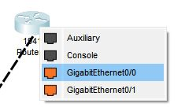
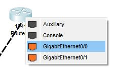

Połączenie dwóch komputerów poprzez routery
20.03.2024 20:00 | Autor: Mateusz Trypuć
W pierwszym kroku z paska należy wstawić trzy routery o oznaczeniu “1941” oraz dwa zwykłe PC
Następnie należy wybrać kabel krosowy który się nazywa ”Copper Cross-Over"
Teraz należy podłączyć go do PC do portu “FastEthernet0” oraz w routerze do portu “GigabitEthernet0/0”
 

Tak samo robimy z drugim PC i routerem
Po tych krokach tak powinno się prezentować połączenie
Taką samą operację wykonujemy na routerze obok
Kolejnym krokiem będzie przypisanie adresu IP, bramy i maski komputerom, w tym celu należy kliknąć na PC, przejść do zakładki Desktop i kliknąć w okienko podpisane jako “IP Configuration” a następnie przypisać adres ip w moim przypadku będzie to 10.10.10.10, Maska 255.255.255.0 i brama 10.10.10.1
W drugim komputerze należy zrobić to samo tylko że z adresem ip 20.20.20.20 maską 255.255.255.0 i bramą 20.20.20.1, jest to przykładowy adres można użyć innego byle nie kolidował
Teraz należy kliknąć w router przejść do zakładki Physical i go wyłączyć w celu zamontowanie modułu HWIC-2T, aby wyłączyć router należy kliknąć wyłącznik a aby zamontować moduł należy okienko HWIC-2T przeciągnąć do wolnego slotu
Teraz należy tą czynność przeprowadzić na drugim i trzecim routerze po czym je włączyć i odczekać kilka sekund w celu uruchomienia
Teraz należy wybrać kabel DCE w celu połączenia routerów
Po kliknięciu i nakierowaniu na router należy wybrać port nazwany “Serial0/1/0” albo “Serial0/1/1” oraz tak samo w drugim i trzecim routerze
Teraz należy kliknąć w Router następnie przejść do zakładki Config oraz przejść do opcji konfiguracyjnej portu GigabitEthernet0/0 i w przypisie Port Status kliknąć w okienko w celu włączenia portu a następnie ustawić IP i maskę w moim przypadku jest to 10.10.10.1 i maska 255.255.255.0 w routerze obok 20.20.20.1 i maska taka sama
Kolejnym krokiem będzie przejście do zakładki “Serial 0/1/0” oraz “Serial 0/1/1”w routerze w wydminach w celu włączenia portów i przypisania IP i maski w moim przypadku będzie to 30.30.30.1 dla portu 0/1/0 i 40.40.40.1 dla 0/1/1 i maska 255.255.255.0 którą zastosuje w pozostałych konfiguracjach. Dla routeru Lunapark nadaje ip dla portu 0/1/0- 40.40.40.2 oraz dla 0/1/1- 50.50.50.1, Oraz dla routeru w Choroszczy nadaje dla portu 0/1/0 30.30.30.2 oraz dla 0/1/1 50.50.50.2
W ostatnim kroku klikamy w router w zakładce Config przechodzimy do zakładki RIP i dodajemy adresy IP przyległych sieci czyli w przypadku lewego routera dodajemy tam adres IP lewego komputera czyli 10.10.10.10 oraz adres IP portu Serial0/1/0 czyli 30.30.30.1 oraz portu 0/1/1/ czyli 40.40.40.1, tak samo robimy dla reszty routerów w przypadku routeru w Choroszczy będzie to 30.30.30.2 i 50.50.50.2 a w Lunaparku to 40.40.40.2, 50.50.50.1 oraz 20.20.20.20
UWAGA jest to normalne że jeśli wpiszesz np 40.40.40.2 to tylko pierwszy oktet będzie miał 15 a reszta będzie wypełniona zerami
W celu sprawdzenia czy wszystko działa należy kliknąć w lewy komputer w zakładce Desktop wybrać okienko podpisane jako “Command Prompt” i wpisać polecenie ping 20.20.20.20 czyli ip prawego komputera można też zrobić to na odwrót

Jak można zauważyć wszystko działa
UWAGA jest to normalne że pierwszy ping może przepaść